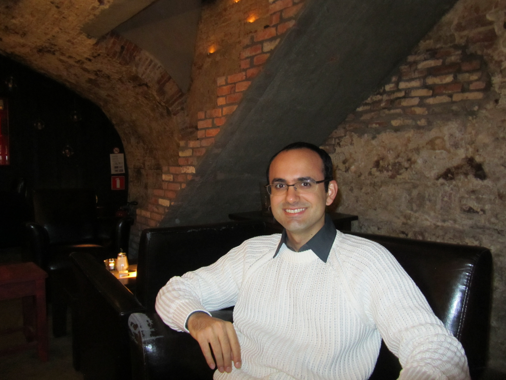

Bem vindo a minha página web!

Professor efetivo no Instituto Federal Catarinense (IFC), campus Blumenau.
- Doutor. em Eng. de Automação e Sis. de Inf., Universidade Federal de Santa Catarina, 2011 - 2015.
- Mestre. em Eng. de Automação e Sis. de Inf., Universidade Federal de Santa Catarina, 2009-2011.
- Bacharelado em Ciência da Computação
, Faculdade Ruy Barbosa, 2004-2008.
CV Lattes